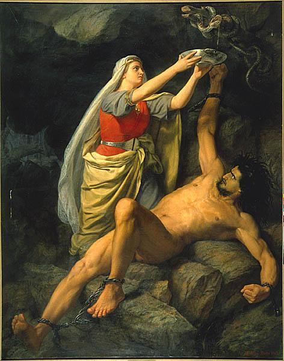

Loke 1.1
Loke version 1.1.
Musik og tekst er skrevet 2011
- 2012 af
Lasse Steen Bohnstedt.
Visse rettigheder forbeholdt. *)
Tekst
|
 Loke och Sigyn af Maarten Eskil Winge, 1890 |
Kommer det blod fra mit eget kød?
Hvad laver jeg i det her hul?
Er det genskæret fra mit sejrsbål?
Næh, se nu hvem, der kommer der:
Frelseren selv og hans frelsens hær!
Du får ikke solgt noget her
Du' et får i fåreklær!
For jeg har ledt dine børn i syndens sikre favn
Og jeg har lært dem at erstatte kærlighed med savn
Og jeg skænkede dem ilden, og jeg tog mig betalt
Og de stolede kun på mig, da det virkelig gjaldt!
Så sæt mig nu løs, tøs!
for ulven skal ha' sin nam nam!
Jeg ku' kun vinde krigen,
for jeg er helt uden skam!
I min helteham
stikker jeg Verden i brand!
Du har jo tabt, det ser du nu
Der' ingen grund, der er ingen Gud
Der' kun det lort, vi selv skider ud
Så tør dine øjne tøs, lad vær' og tud'!
For jeg har taget dine børn, det var næsten for nemt
Og jeg brugte dem grundigt, før du fik dem igen
Og jeg skænkede dem Månen, og jeg tog mig betalt
Og de stolede kun på mig, da det virkelig gjaldt!
Og jeg sad på min trone
og så, at alting var ondt!
Alle djævlene vrælede,
mens pøbelen blev rykket rundt!
I sygeste bad ass stil
styrer jeg festen for vildt!
For jeg har dræbt dine børn!
Jeg har dræbt dine børn, de stod stille som lam!
Og de skrev tykke bøger om, at du og jeg er den samme!
Og jeg lovede dem Himlen, og jeg tog mig betalt
Og de stolede kun på mig, da det virkelig gjaldt!
Så nu gi'r du mig din plads
i Himmelens slot!
Nej, jeg vil ikke ha' din tilgivelse!
Du kan stikke den skråt op!
De gode græder snot
Og resten tror, det går dem så godt!
Slip mig fri, slip mig fri!
Jeg drak deres blod som vin
mens gnomerne skreg af grin!
(crash)
Hvor blev du af? ...
Gamle versioner af "Loke"